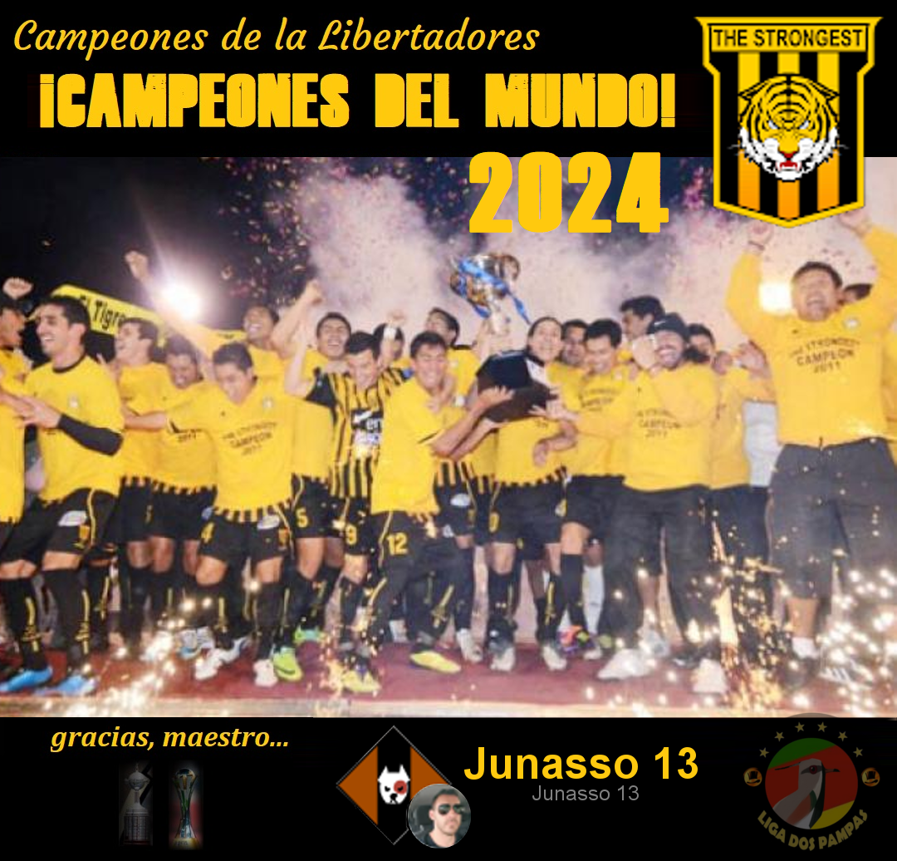
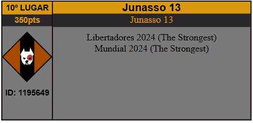
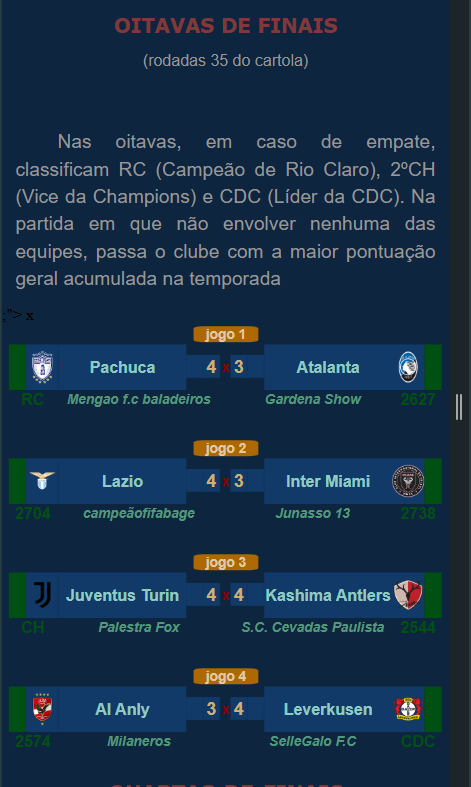
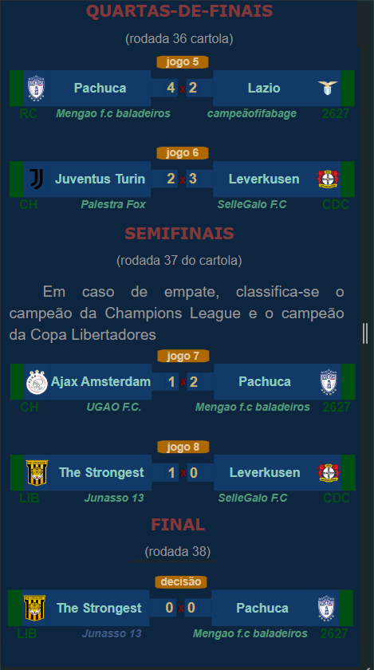

Campeonato de Cartola
A vitória no cartola é o sucesso do seu time!

Redação Cartola - 12/12/2024 - 21h56min 
Os 37,28 contra os 46,28 do Pachuca (tec. Mengao f.c baladeiros), garantiu ao The Strongest, no limite, diferança abaixo dos 10pntos, o que posibilitou segurar o empate em 0x0 e garantir o troféu de Campeão Mundial de 2024.
A exemplo do ano passado, em que Dep. Tachira (CearajáJaguar19) acumulou o título da Libertadores e do Mundial de Clubes, a conquista do The Strongest, captaneado pelo "Junasso 13", confirma a supremacia dos ganhadores da américa em relação aos demais adversários.
Na partida entre Ajax do "UGAO FC" contra o Leverkusen do "Sellegalo F.C", melhor para o Ajax, favorecido com o empate por 0x0 (52x55) em razão de ter chegando na condição de campeão da Champions League.
Treinador campeão faturou 160 reais e 150pts no ranking geral de treinadores, enquanto o técnico do Pachuca, Mengão FC Baladeiros, obteve 80 reais e o terceiro, Ajax do "UGAO FC", 30 reias.
Com o título, "Junasso 13" saltou da 20ª para a 10ª posição do ranking geral dos melhores treinadores de todos os tempos, chegando à marca dos 350 pontos, empatado com o 6º colocado, junto com outros 4 cartoleiros. 
Parabéns, Junasso 13!
Abaixo, o quadro completo do Intercontinental de Clubes de 2024.  